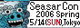

Banners
Full Size
Half Size
Micro Size

Link Samples
Full Size
<a href="http://event.seasar.org/sc2006spring/" title="Seasar Conference 2006 Spring - 5/14(日) 東京, 法政大学ボアソナードタワー26階 スカイホール"><img src="http://www.seasar.org/event_sc2006/SeasarCon2006Spring_Full.png" width="468" height="60" border="0" alt="Seasar Conference 2006 Spring - 5/14(SUN), Tokyo"></a>
Half Size
<a href="http://event.seasar.org/sc2006spring/" title="Seasar Conference 2006 Spring - 5/14(日) 東京, 法政大学ボアソナードタワー26階 スカイホール"><img src="http://www.seasar.org/event_sc2006/SeasarCon2006Spring_Half.png" width="234" height="60" border="0" alt="Seasar Conference 2006 Spring - 5/14(SUN), Tokyo"></a>
Micro Size
<a href="http://event.seasar.org/sc2006spring/" title="Seasar Conference 2006 Spring - 5/14(日) 東京, 法政大学ボアソナードタワー26階 スカイホール"><img src="http://www.seasar.org/event_sc2006/SeasarCon2006Spring_Micro.png" width="88" height="31" border="0" alt="Seasar Conference 2006 Spring - 5/14(SUN), Tokyo"></a>